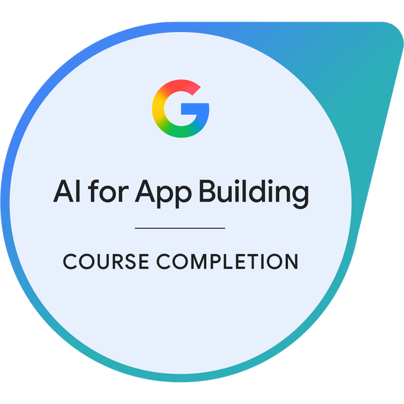
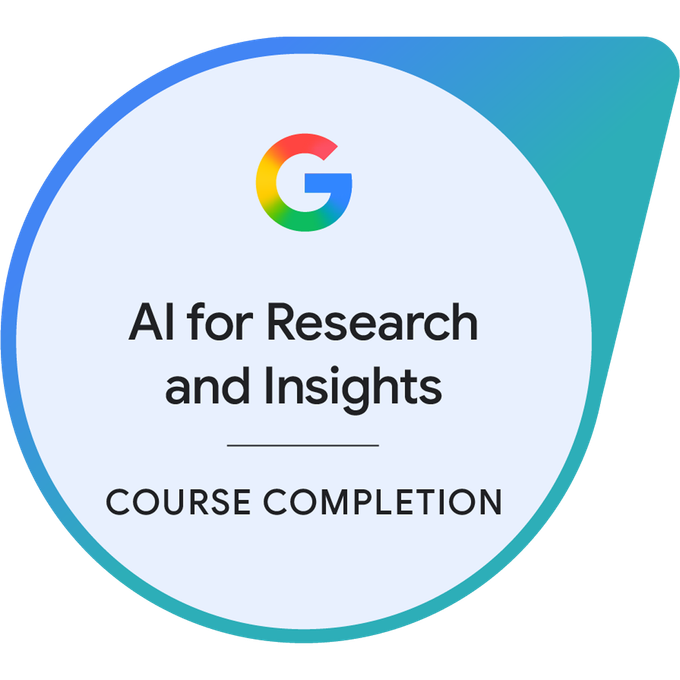
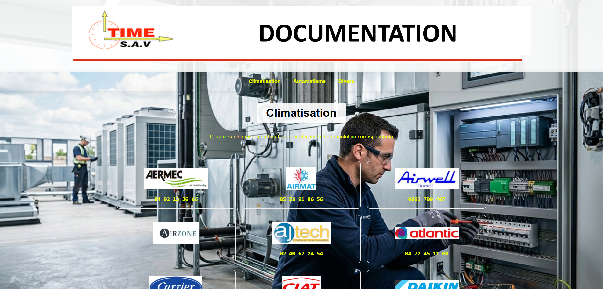
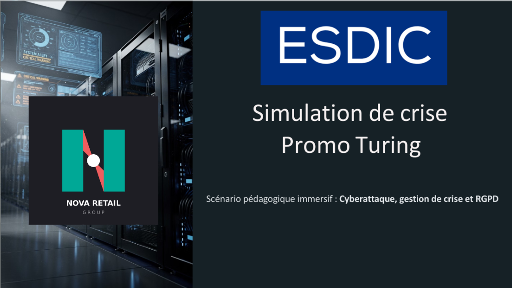
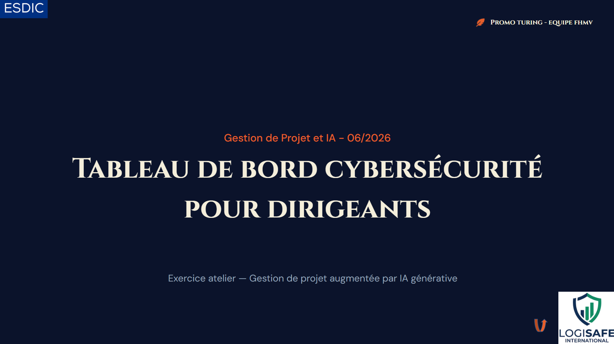

Web Development
Création complète Web
Déploiement d'une présence digitale pour une société en énergies renouvelables.
Un apprentissage permanent, et une mise à jour régulière des procédés par la certification
Module 1 : Le RGPD et ses notions clés
Module 2 : Les principes de la protection des données
Module 3 : Les responsabilités des acteurs
Module 4 : Le DPO et les outils de la conformité
Module 5 : Les collectivités territoriales
Module 6 : Travail et données personnelles







Un apprentissage continu, une montée en compétences par les diplômes.
ESDIC
Certification Niveau 7 - RNCP39234
Stratégie Digitale, Gestion de Projet, Data, IA, Cybersécurité, Gestion de risque, Expérience utilisateur
STUDI
Certification Niveau 7 - RNCP36287
Management des technologies de l'information et stratégie digitale.
LINKUP COACHING
Certification Niveau 7 - RNCP31143
Conseil en Management
AFPA
Expertise technique en systèmes de climatisation et froid industriel.
École du personnel volant de la Marine Nationale
Formation de navigant et spécialisation en électronique embarquée.
Une double compétence rare : la maîtrise de la donnée alliée à une solide expérience du terrain.
Focus : Transformation de données brutes en indicateurs de performance (KPI).
Focus : Capacité à évoluer dans un environnement technique anglophone.
Focus : Automatisation de processus et création d'outils de gestion sur mesure.
Focus : Maintenance préventive et gestion des interventions terrain complexes.
Focus : Management en environnement exigeant.
Plus de 20 ans d'expérience en chefferie de projets généraliste et technique.
Volny Moget
DRIMM, Groupe Séché
KALORIO
V2M34
Volny Moget
Groupe ENR (AJ Confort, EVOSYS)
TIME SAV
Marine Nationale
Des solutions concrètes alliant logique de programmation et efficacité métier.
Déploiement d'une présence digitale pour une société en énergies renouvelables.

Architecture d'une base de données clients avec calcul de marge et gestion de planning.

Centralisation des ressources techniques pour les interventions terrain (2013).

Conception de fiches d'intervention et de suivi pour la formation froid.

Mise en place PCA, PRA, Analyses de risques...
Mise en avant de la RGPD

Note de cadrage, Budget estimatif, Business Case, Charte de gouvernance IA, KPI, Evalutaion des risques, Plan de communication et conduite du changement, Planning, Gantt, RACI, WBS